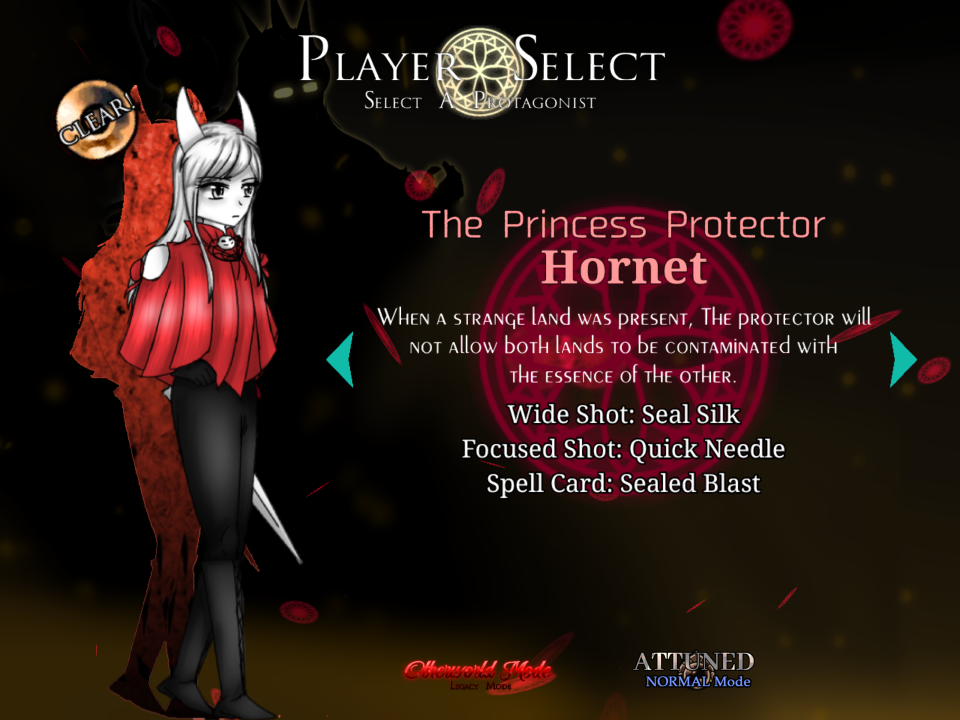
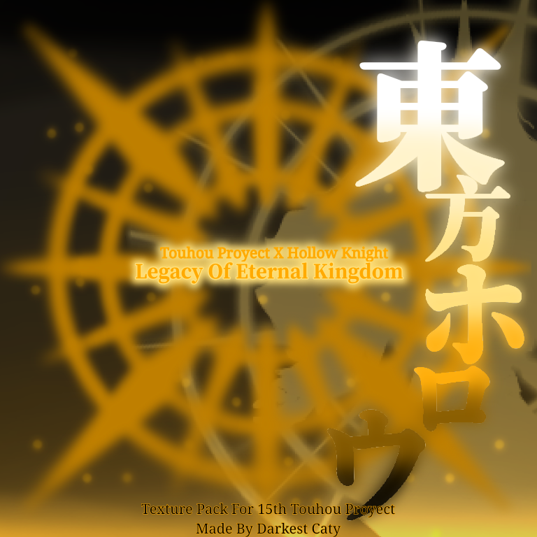

Legacy of Eternal Kingdom is a mod for Touhou 15 LoLK - Legacy of Lunatic Kingdom, it's development started since December, 2023 and it was finally released on April 1st, 2024 as a mod that replaces all of the game and bringing the experience of the indie videogame Hollow Knight. The mod includes an AU-crossover lore with Hollow Knight and Touhou characters.
This is one of the first mod that features new, challenging danmaku patterns. However, not all the patterns are currently changed (I'm procrastinating).
You have a total of four characters, everyone from the original game:
Each one have new custom shots, almost all of the shottypes have homming projectiles, but some characters have more range than others.
There are also two new mechanics:
The first one is the Dream Nail, with which you can get extra soul and see special dream dialogs from bosses when bombing, the extra soul can be get 1 time per phase, and the dream nail can't be used from stage 6 onwards if the player is not The Knight.
The second is the Last Breath, a kind of survival-type Last Word, a strong, final spellcard from the boss where you need to survive completely.

Be careful and memorice every possible attack.
Don't remember you still have the Point-Device and Legacy mode, as "True Radiant" and "Otherworld" mode respectively.
Out of nothing, a part of the land of Hallownest appeared in Gensokyo. An inhabitant of the Eientei tried to realize what happened, but even the eternals are vulnerable to that misterious infection that plagues the faded kingdom of that land.
After being saved by the princess protector, they became friends and decided to do something to prevent Gensokyo to fall by the infection. So the princess recluted some familiar faces and went to investigate, while the sage of Eientei protected the border so that no one would risk their life in vain.
Not even the shrine maiden could intervene; everything was in the hands of those strangers...
This mod replaces all of the tracks, excepting the title screen theme, as a way of remember the vanilla game.
Authors:
Almost all the tracks correspond to the original place, exepting from stage 5 boss onwards, where bosses have a metal arrange for getting a better atmosphere. And then there's the staff theme.

Kanji: 東方ホロウ
Type: Mod, Full
Release: April 1st, 2024
Developers: Dark Caty
Dimension: Hallownest
Music: Christopher Larkin, FalKKonE, LittleVMills
Credits: ZUN, Team Cherry
Languaje: English